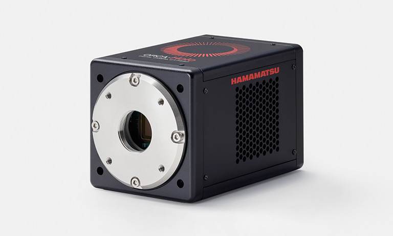

NOTE 06 · PHYSICS
이미지센서의 광자 샷 노이즈
이미지센서의 주요 노이즈에는 읽기 회로에서 발생하는 읽기 노이즈, 열적으로 생성되는 암전류와 암전류 샷 노이즈, 입사 광자 수의 통계적 변동에서 오는 광자 샷 노이즈가 있다. 앞의 두 항을 크게 낮춰도 광자 샷 노이즈는 남는다.

같은 밝기의 장면을 같은 시간 동안 찍어도 픽셀에 들어온 광자 수는 매번 조금씩 다르다. 이 변동은 포아송 분포를 따르고, 평균 광자 수가 N이면 표준편차는 대략 √N이다. 신호는 N만큼 커지지만 노이즈는 √N만큼 커지므로 최대 신호대잡음비도 √N에 비례한다.
센서가 모든 광자를 전자로 바꾸지는 못한다. 양자효율이 80%라면 평균 100개의 광자가 들어왔을 때 평균 신호 전자는 약 80개다. 실제 SNR 계산에는 이 신호 전자 수와 읽기 노이즈, 암전류 전자의 분산을 함께 넣는다. 광량이 매우 적을 때는 읽기 노이즈가, 노출이 길고 센서가 따뜻할 때는 암전류가, 충분히 밝을 때는 광자 샷 노이즈가 지배적이다.
그래서 빛을 네 배 모아야 신호대잡음비가 두 배가 된다. 더 큰 픽셀, 더 긴 노출, 더 밝은 렌즈가 여전히 중요한 이유다. 냉각은 암전류를 줄이고 좋은 회로는 읽기 노이즈를 낮추지만, 이미 광자 샷 노이즈가 지배하는 구간에서는 후처리만으로 새 정보를 만들어낼 수 없다.
다크 프레임을 빼면 고정 오프셋과 고정 패턴은 보정할 수 있지만, 두 독립 측정의 확률적 노이즈는 더해진다. 다크 보정이 암전류 샷 노이즈 자체를 제거하는 것은 아니다. 암전류를 줄이려면 센서를 냉각하거나 노출 시간을 줄여야 한다.
카메라 성능표에서는 화소 수만 보지 않고 양자효율, RMS 읽기 노이즈, 암전류, 포화 전자량과 동적 범위를 함께 확인해야 한다. 측정하려는 광량과 노출 시간에 따라 어느 노이즈 항이 지배적인지가 달라진다.